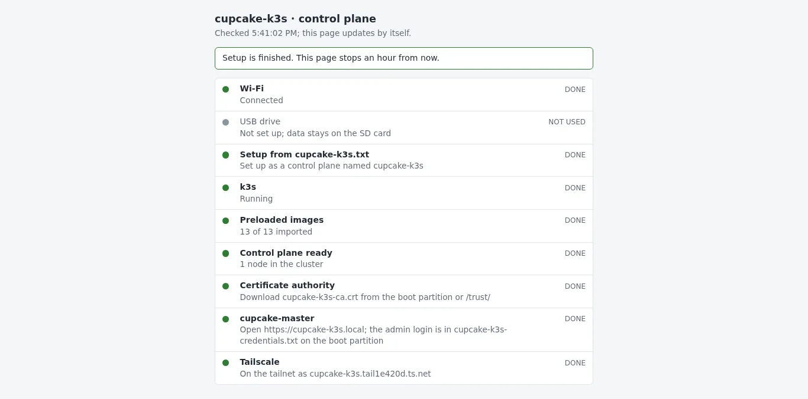

A Raspberry Pi becomes a k3s control plane or worker from files copied onto the boot partition of its freshly flashed card, next to the files already there. Each file is read on the next boot.
| File | Does |
|---|---|
cupcake-k3s.txt |
Required: ROLE=server for the control plane or ROLE=agent for a worker, and the same TOKEN on every Pi |
cupcake-wifi.txt |
Connects to a Wi-Fi network |
cupcake-storage.txt |
Keeps k3s's data on a USB drive instead of the SD card; recommended |
cupcake-tailscale.txt |
AUTHKEY joins the Pi to your tailnet; CLIENT_ID and CLIENT_SECRET set up the Tailscale operator |
cupcake-cloudflared.txt |
TUNNEL_TOKEN connects a Cloudflare tunnel |
cupcake-selftest.txt |
Runs the self-test on that boot |
Files with secrets are removed from the card once they are used. Problems are written to cupcake-k3s-error.txt, and
the admin login to cupcake-k3s-credentials.txt.
Following the setup
While a Pi sets up, it shows each step at http://<host name>.local:8080, for example http://cupcake-k3s.local:8080,
and over Tailscale once it has joined. The page stays for an hour after setup finishes.

Checking a Pi
Copy cupcake-selftest.txt onto its boot partition and restart it. After up to 15 minutes, cupcake-selftest-report.txt
next to it says whether setup, k3s, the images, the USB drive, cupcake-master and remote access work. The activity light
shows a heartbeat for pass and a fast blink for failure.
Keeping the data safe
Use a USB SSD with cupcake-storage.txt rather than the SD card, a small UPS, and a backup target so a
copy of every night's backups leaves the cluster.